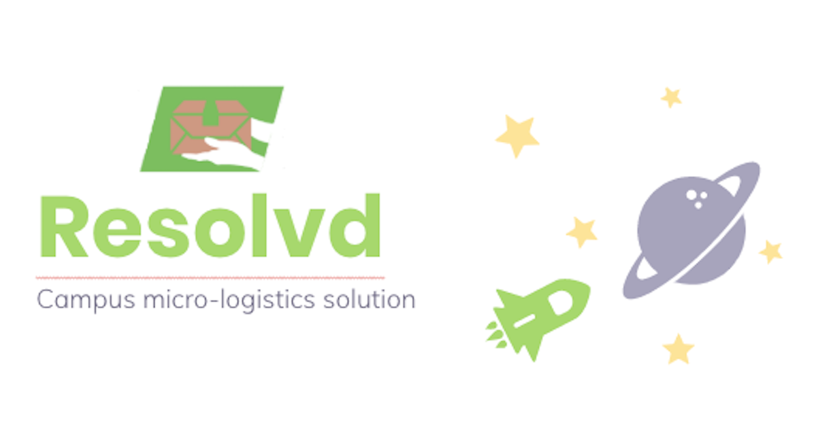
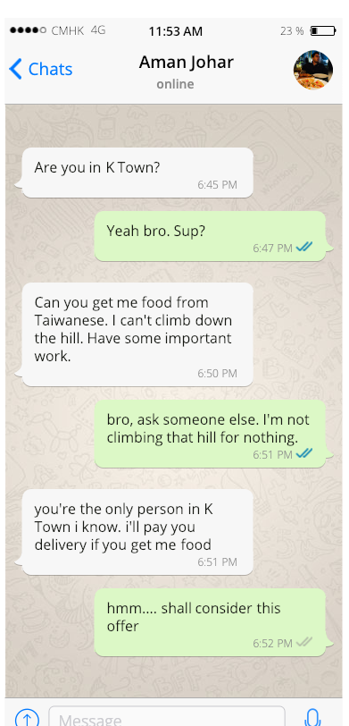
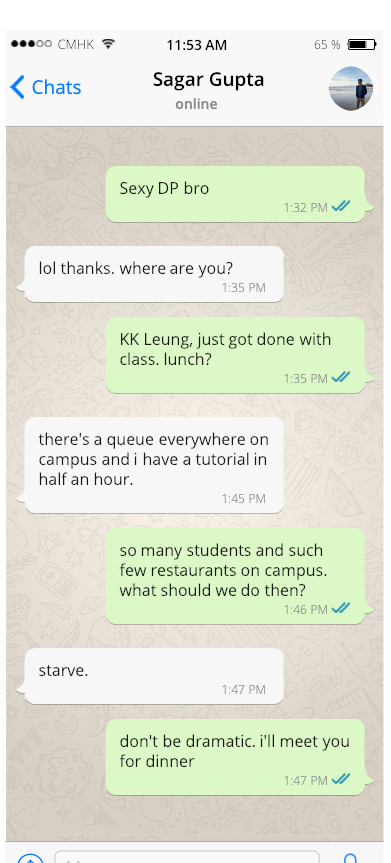
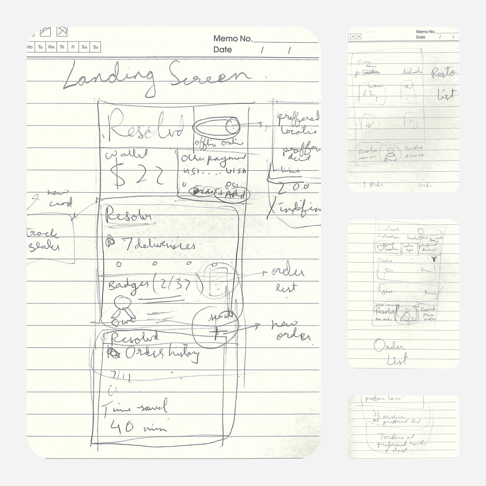
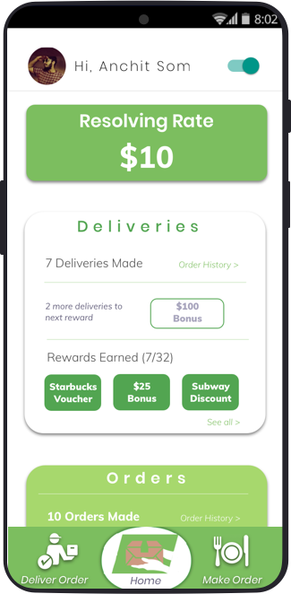
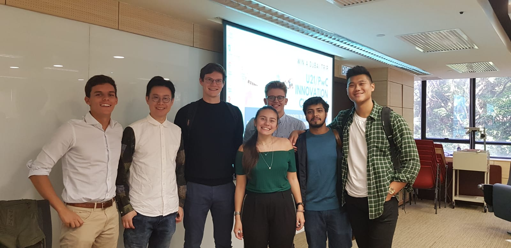

About Project.
This project was part of the course IIMT2601: Management Information Systems . Our task was to design a product for a business which acts as a marketplace platform with a defined supply and demand side and promotes the concept of shared economy. We chose to design a business around Campus Micro-logistics and Food Delivery as it was a problem faced by us on a daily basis and we had a good understanding of user needs along with the business value of such a platfom. The time duration of the project was 4 weeks.
My Role
This was a group project and the team consisted of students from Netherlands, UK, USA, Portugal and Germany. Our deliverables included a 4000 word report and pitch deck on the business model. I took responsibility for defining Product Features and designing the overall UX of the application, while others took on market research and implementation strategy based roles.
Inspiration
A series of whatsapp chats with friends of mine that illustrates the problem we're trying to tackle.


Research
User Interviews
Guerilla interviews were conducted on unsuspecting customers waiting in restaurant queues and people eating food in various cafeterias around campus to understand the extent of the problem and user perception of our app.

Market Research
This involved researching on existing delivery platforms that could be potential competitors along with analysing the hyper-delivery industry in general to find trends and ideas.
Pricing Research
Since our app is based on supply and demand we conducted separate interviews to understand exactly how much a "customer student" would be willing to pay and how much would a "delivery student" expect to earn.
Analysis
Product Description
“Resolvd” is a hyper-local errand running and delivery service platform that matches people who need their errands completed to people willing to complete them.
Errands could include queuing to buy and deliver food to you by your next class, or delivering documents to you while you’re in the library and don’t want to give up your seat. (for this version of the application, we focus on food delivery)
Our online platform connects students within a university campus radius and allocates students who don’t have time to students who do. We plan to launch our app at the University of Hong Kong campus to create a shared economy through Resolvd: made for students, by students.
Primary Users
In university campuses all around the world, students are juggling between academics, clubs, part-time work, sports, relationships, etc. With so much to do in such a short amount of time, Resolvd helps connect busy students with others that can help them get tasks done, whether that be delivering food to them in class or picking up paperwork from the other side of campus. While there are other errand-running services currently available on the market, none are as hyper-local and market-specific as Resolvd.
With the costs of university tuition and living going up every year, some students are struggling with having enough cash just to get by. The only way students can currently make money is by getting a part-time job, which forces them to work a certain amount of hours in a week and doesn’t give them flexibility in their schedule. On the other hand, Resolvd offers students an opportunity to earn money by delivering goods and completing miscellaneous tasks whenever it’s convenient for them.
Secondary Customers
During peak pedestrian traffic around lunch time, a lot of restaurants on campus currently aren’t efficient when handling the long line of customers. This ultimately leads to impatient customers exiting the queue for faster dining options, leading to lost revenue for the business. Resolvd would allow customers to order food whenever it’s convenient for them and not have to wait in long queues. This means that restaurants would receive a steady flow of business throughout the day, rather than hoards of students at specific times. Firms can also market their business directly to students through our app, since students can easily order food through our platform.
By having a single errand runner performing the same task for multiple people, such as picking up sandwiches from Subway or printing out multiple documents for multiple clients, Resolvd will significantly reduce the flow of pedestrian traffic around campus. This reduction will help people get to where they need to go faster and increase overall productivity.
Dynamic Pricing
Extensive pricing research revealed that the supply-demand is quite volatile with high demands during peak lunch hours and greater supply in non-peak hours. Thus we decided to approach a dynamic pricing approach as opposed to fixed pricing for the Resolver fees.
Fees for the customer will range from a minimum of HKD 4 to a maximum of HKD 20, depending on supply and demand. There will be an algorithm in place constantly calculating delivery fees, based on how many Resolvers are available and how many orders are placed.
The primary revenue stream for this business model is commission-based; thus an extra 25% of the Resolver fee will be charged as commission to the customer ordering food, however this will also be affected by the dynamic prices. Thus the minimum commission we will earn would be HKD 1 and the maximum would be HKD 5.
Key Customer Concerns
After conducting user interviews on product usage, some important concerns were identified -
KCC 1. How will I know whether my order will be accepted or not?
KCC 2. What if the Resolving rate is too low?
KCC 3. What if the Resolver/Customer never comes to the decided location?
KCC 4. I can't keep on waiting for the order to be accepted. There has to be some deadline.
KCC 5. Can I pay more than the rate for the Resolver to accept my order?
KCC 6. How will I tell the customer that I'm available for delivery?
KCC 7. What is the exact amount I will have to pay on top of the delivery?
Prototyping
Users were involved in the Design process as I drew a few rough sketches of the app in front of them to understand how elements can be placed in the app to reflect their mental model and KCCs.
Designs and Features
Home Screen

The home screen has the resolving rate at the top, which represents the fee the delivery will charge during that time (addresses KCC 7). The side toggle can be switched to the right to mark availability for delivering food and the GPS would track which location the user is at. (addresses KCC 6)
There exists a Delivery card of the user which shows the number of deliveries made and rewards earned. The aim of this card is to incentivise people to make deliveries as they can see how many more deliveries are needed to earn the next reward. (addresses KCC 2)
Below that exists an Order card for the user and shows the history of orders along with other information such as time saved and referral schemes for customer acquisition.
Customer Order-Making User Flow


After clicking the “Make Order” tab, the user is redirected to a screen with a restaurant list which shows the number of resolvers/delivery personnel at that location. The user can select the drop-off location and delivery time for the order in the top bar. User can either see the total resolvers at the restaurant or select the other option to see number of resolvers delivering to their drop-off. (addresses KCC 1)
In the billing screen, the user can see the Resolver fees, and the Resolvd Tax, which is the amount earned by the application on each delivery. (addresses KCC 7) They can add an acceptance deadline such that the order appears in listing till that designated time. Once that time period is passed, the order will be removed from the system. (addresses KCC 4) They can also add an extra tip to incentivise the Delivery person to consider their order. (addresses KCC 5) They select a payment option and complete the billing process.
After this is done, the user is redirected to the home screen where a new upcoming order card appears with the status of that order. In case of problems, the user can chat with or call the resolver who has accepted the order (addresses KCC 3). To confirm delivery the user simply has to click on the confirm button in front of Order Delivered.
Resolver Delivery User Flow


After clicking the Deliver order tab, the user is redirected to the order listing screen where he/she picks up his preferred pickup location and drop-off location. The list is populated with results that match his choice along with results that might not match but offer extra tips to the Resolver (addresses KCC 2).
When the user clicks on an order listing, they enter the order summary screen where the specific order details are displayed along with the fees they would earn from it.
On clicking Accept, the user is redirected to the Home screen where an upcoming order card appears. This card is the same as the one that the customer sees, and the resolver has the option to chat or call in case of dispute. The resolver has to click on confirm for Order Pick-up and on Delivery to confirm status of order with the Customer (addresses KCC 3).
The project was highly commended by the Professor and he proposed turning it into an actual business.
